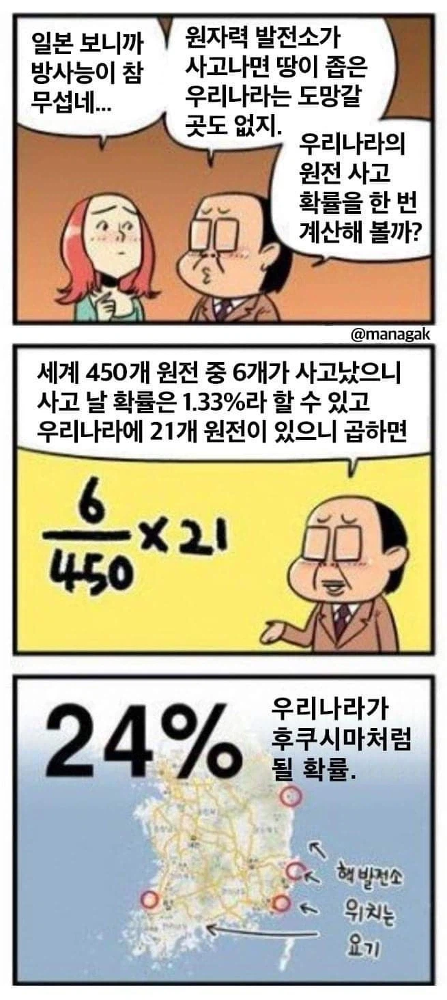
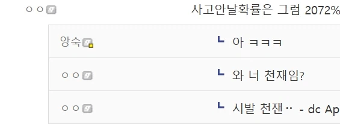

심지어 하나 터질때마다 확률이 늘어남
저정도되면 병원가야함
예술가가 지들 전문분야도 아닌데
남 가르치겠다고 으스대는게 그리 꼴보기 싫더라
원전 무섭다는 애들은 중국은 서해에 원전이 몇개나 있는지 제발 좀 봤으면 좋겠다
혹시 얘네는 독립시행이나 도박사의 오류 따윈 모름?
탈원전 정책기조가 옳다고는 못하겠지만 솔직히 후쿠시마 터지고 원전에 대한 공포가 있는 상황에서 내가 정치인이었어도 탈원전 외쳤음. 그 때 원전투자 외쳤으면 고대로 백수행이고 커뮤에서도 갈갈 갈렸을걸.
그때도 반대 목소리 컸는데 강행한건데
강남에 원전짓자는 소린없냐
원전을 서울에좀 지어라...
그럼 쫄아서 기어나갈거아니냐
세상에 그럼 수학여행가다 뒤질 확률은 얼마여 ㄷㄷㄷ
공항가다 뒤질 확률은 또 얼마고 ㄷㄷ
제미나이에 물어보니 답은 맞는데 계산식이 틀리다네
전기가 벽에서 그냥 나오는줄 아는 사람들 많더라
그냥 뮤턴트 되면 됨 ㄱㅊ
문과 시벌놈들
사고날 확률을 저따위로 계산하냐
그렇게 따지면 사람끼리 맞짱떠서 죽을 확률은 1%이하니깐 마이크 타이슨이랑 맞짱떠도 안죽겠네
? 근데 (0.987)^21 = 0.7597 이라 대충 24퍼는 맞음.
계산 방식은 틀렷지만 결과는 맞았으니 한잔해
그림체도 좆같네
정보) 6/450×21=28%
1-(1-6/450)^21=24.56%
계산식을 잘못써놔서 그렇지 24%는 맞는 수치다
1.3% x 4.6% 쯤 되네 그럼 24% 맞네
그래서 정권 업적 홍보한답시고 웨스팅하우스에 불공정 이면계약 체결해서 한국 원전기술 거세해버린 사람 누구?
계약 내용 구글링해보면 진짜 말이 안나옴 극도로 높은 수수료, 연료 독점권 넘겨줌, 그걸 영구 혹은 50년 유지해야함, 원전 기술 주권 및 유럽 북미 일본 시장 진출 완전 포기
탈원전 외쳐도 신규 원전만 안짓고 기존 원전은 멀쩡히 굴렸는데 2022년 이후로 산업 자체를 아예 고자만든 건 수상할 정도로 펨코남 기억에서 삭제되더라ㅋㅋ
그림 실력도 어중간한데
계산까지 초딩보다 못하면 저건 좀...
두번짼 기댓값을 구한 거 같고 세번째 확률도 1-(1-6/450)^21=24.56 얼추 맞게 나왔으니 사실 틀린 게 없음
사고날 확률 1.33% 전세계 원전 450개
전세계가 후쿠시마 처럼 될 확률 600%
좆됐네여 ㅎㅎ
큰일은 문과가 한다